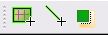
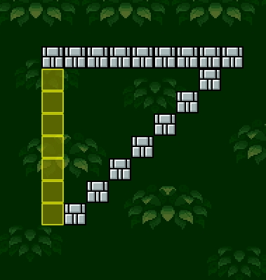
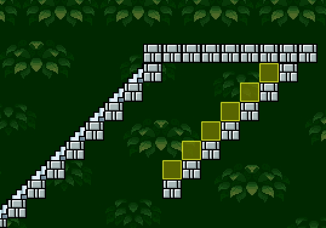
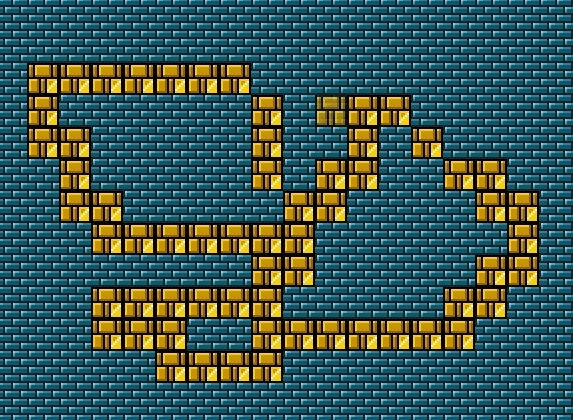

This is additional features which help with placing of items.
Available tools:
- Square Fill - the tool which placing of the items by sqare drawing. This useful for draw big walls or fill holes.
- Line - the tool which allow draw line of items. This tool useful for draw slopes, colomns, and long platforms.
- Overwrite mode. This feature allow replace items, placed on the map.

This is a special tool, which can be used for speed place of item group on the map.
This feature available for BGO and Blocks. And in the world map editor available for any items.
For use this feature, you must press on the "Square fill" icon, and for place item group, you must draw the rectangle on the map and it will be filled with selected item.
Placing items with sqare fill tool

This is a special tool, which can be used for speed place of item group on the map.
This feature available for BGO and Blocks. And in the world map editor available for any items.
For use this feature, you must press on the "Line" icon, and for place item group, you must draw the line on the map and it will be filled with selected item.
Placing items with line tool


This feature allow replace items, placed on the map. For use them, switch the "Overwrite mode" icon on the toolbar and when you place some item on the map, all colliding items will be removed.
Draw with overwrite mode

Copyright © 2014 Platformer Game Engine by Wohlstand project. All rights reserved.